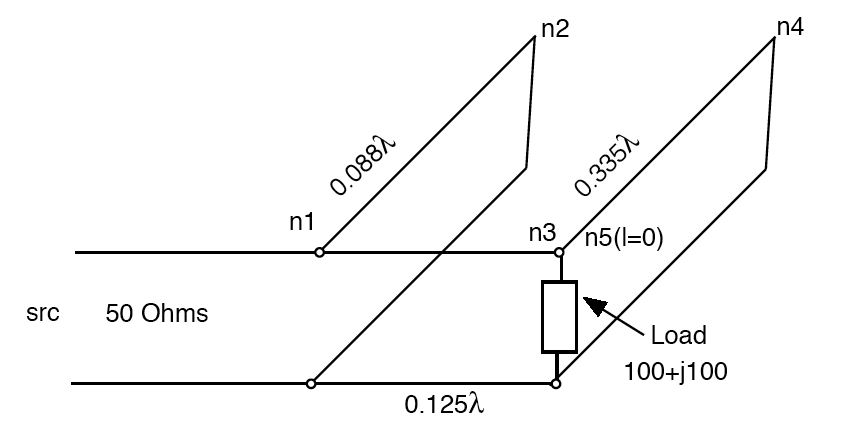

The C Code including integrated TCL interpreter is hosted on GitHub here. The progam is called TransNetCalc.
Prof. Sasan Ardalan has over the years developed a C program for modeling, design and analysis of complex transmission line networks.
The program is called TransNetCalc and is Open Source LGPL 3,
Paper on the Computer Modeling of Complex Transmission Lines (Foundation for TransNetCalc):For Modeling and Analysis of Plane Wave Propagation through dielectric sections and plasma see the paper below.
 TCL
TCL
TransNetCalc also incorporates a TCL interpreter so that transmission line networks such as double stub tuners, microstrip bandpass and bandstop filters for instance can be optimized. Also the impact of parameter changes and variation on performance can be computed and plotted.
Here is a link to the User Guide. Note that microstrip lines are also supported.
Example Network (Double Stub Tuner):
n1 n2 n3 n3 n4 n5 n2 n4 n5 end n1 coax1 30 n2 coax1 1.76 0 0 n3 coax1 2.5 n4 coax1 6.6 0 0 n5 R100_L0.0000015915 0 open
The coaxial transmission line coax1 has characteristic impedance of 50 Ohms.
The scripting capabilities of TransNetCalc using TCL are described here with documentation of the TCL commands.
TransNetCalc has been developed by Professor Sasan Ardalan since 1987 while at NC State University and has been incorporated into Capsim® since 1989. The code has been enhanced and debugged through the years. The integration with TCL was done in August 2006. Susan Alexander working with Prof. Ardalan developed the recursive solution to the binary tree representation of transmission lines. Ken Shuey provided support for modeling power transmission lines. Gary Ybarra (now a professor at Duke University) working with Professor Ardalan extended TransNetCalc to model plane wave propagation and turbulent Plasma’s as encountered in the re-entry or aero assist braking off the atmosphere. Joseph Hall, an outstanding programmer, developed a graphical interface to the underlying C code while at NC State back in 1988. TransCalcNet has been successfully used in the design of microstrip bandpass filter at 10GHz, bandstop filter at 8.3 GHz and also bandpass filters at 60 GHz. It was also highly accurate in modeling the plasma developed during re-entry on heat tiles (matching super computer models at NASA).
The TransNetCalc stand alone program and developed TCL commands and API is written in C and are licensed under the GNU Lesser General Public License. The TCL scripts are covered by the GNU General Public License. The scripts are separate from the TransNetCalc library. The intention is to provide all of the source code of TransNetCalc as open source code with freedom to modify and enhance the code. All modifications and enhancements to theTransNetCalc C API, TCL Commands must be published if distributed. Any distribution of the created code linking to the the TransNetCalc API and TCL commands must include a statement showing links to the original TransNetCalc source code. The source code linking into the TransNetCalc API or TCL commands does not need to be exposed.
Silicon DSP Corporation
1989-2025
https://www.ccdsp.org